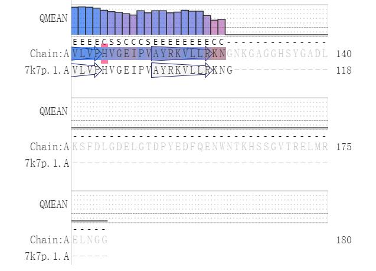

- Team
- Project
- Lab
- Model
- Parts
- Improvement
- Contributions
- Judging

In the blue light-off system, YF1 switched to turn on in the dark and phosphorylate FixJ, which binds to the PFixK2 to initiate expression of the downstream sfGFP. When irradiated with blue light, the phosphorylation of YF1 was repressed, thereby inhibiting the downstream sfGFP (Fig. 1 A & B). To verify the construction and function of blue light-off system, two groups were set to proof the strong inhibition of the blue light on our bacteria. Moreover, compared with the construct without blue light, our blue light-off system would constantly inhibit the fluorescent expression with blue light induced. And since the construct shows little difference in fluorescent expression with the mock when blue light on, we indicated our system with a low leak (Fig. 2 and 3).
Based on the light-control system of 2018 UCAS-China , to enrich our blue light system, repressor pair CI-Plambda were introduced in our project to achieve the opposite effect to turn on the downstream expression. Therefore, in the blue light-on system, sfGFP is expressed with blue light irradiation (Fig. 1C & D). According to the design above, to verify the function of blue light-on system, two control groups with mock were set to proof the activation of the blue light on our bacteria. As shown in Fig. 4, compared with the construct without blue light, our blue light-off system would constantly activate the fluorescent expression with blue light induced.

(A) The emission intensity at 528 nm was measured at the excitation wavelength of 485 nm. After that, measure these values at the indicated time. (B) E. coli DH5α with blue light-on system. (a) 18-hour incubation without blue light; (b) 18-hour incubation with blue light.
Added with the repressor pair CI-Plambda in the downstream, our blue light-on switch was constructed to achieve the opposite effect of BBa_K2598009 since in synthetic biology a light-activated switch is more practical than a light-repressed switch. Based on this mechanism, more light-control effects can be reversed in the future, realizing the diversification of regulations for iGAME.